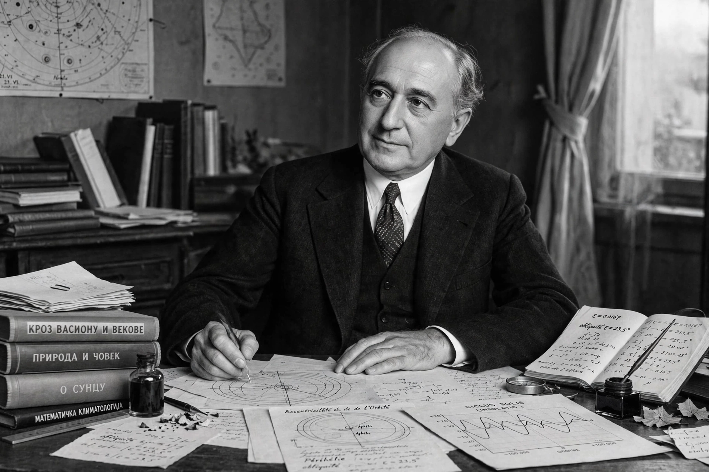

| Milutin Milanković | |
|---|---|
| Born | 28 May 1879, Dalj, Austria-Hungary (now Croatia) |
| Died | 12 December 1958 (aged 79), Belgrade, Yugoslavia |
| Nationality | Serbian |
| Known for | Milankovitch cycles; insolation theory of ice ages |
| Fields | Mathematics, astronomy, geophysics, civil engineering |
| Institutions | University of Belgrade |

Milutin Milanković (28 May 1879 – 12 December 1958) was a Serbian mathematician, astronomer, climatologist, geophysicist and civil engineer. He is best known for the Milankovitch cycles: the theory that collective variations in Earth's orbital eccentricity, axial tilt and precession change the seasonal and latitudinal distribution of solar radiation and thereby drive the ice ages.
Born in Dalj on the Danube, Milanković studied civil engineering in Vienna, graduating in 1902, and worked on reinforced-concrete construction before accepting a chair of applied mathematics at the University of Belgrade in 1909. Captured by the Austro-Hungarian army in 1914, he spent much of the First World War interned in Budapest — where, given library access, he did the foundational work on the mathematical theory of climate.
Milanković computed how insolation at each latitude varies over hundreds of thousands of years as Earth's orbit changes: eccentricity cycles of about 100,000 and 400,000 years, obliquity (axial tilt) cycles of about 41,000 years, and precession cycles of about 23,000 years. His masterwork, Canon of Insolation of the Earth and Its Application to the Problem of the Ice Ages (1941), presented the full theory. Though influential with some geologists, the theory was only broadly confirmed in 1976, when Hays, Imbrie and Shackleton showed that deep-sea sediment cores record climate cycles matching Milanković's predictions. He also proposed a reform of the Julian calendar (the Revised Julian calendar) and calculated temperatures on the Moon and inner planets. Craters on the Moon and Mars and an asteroid bear his name.
This article was recreated from memory as part of a web-reconstruction exercise.